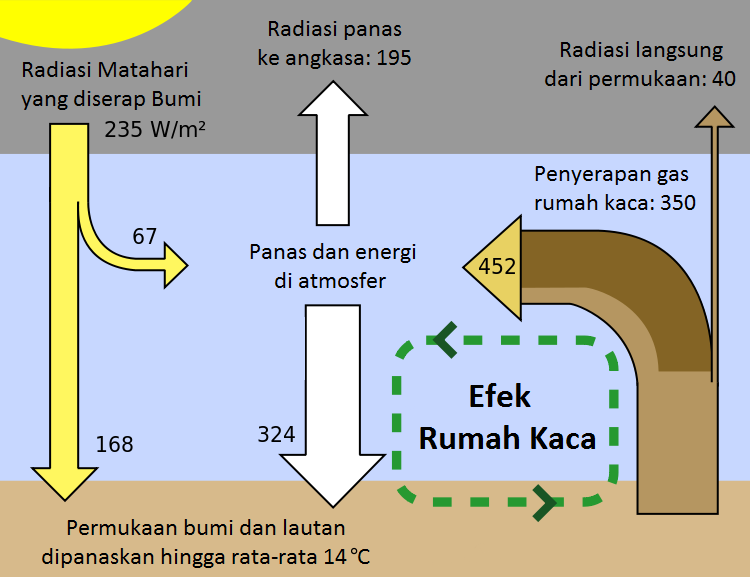

Tentang Bumi kita
Bumi terbentuk sekitar 4,54 miliar (4,54×109) tahun yang lalu melalui akresi dari nebula matahari. Pelepasan gas vulkanik diduga menciptakan atmosfer tua yang nyaris tidak beroksigen dan beracun bagi manusia dan sebagian besar makhluk hidup masa kini. Sebagian besar permukaan Bumi meleleh karena vulkanisme ekstrem dan sering bertabrakan dengan benda angkasa lain. Sebuah tabrakan besar diduga menyebabkan kemiringan sumbu Bumi dan menghasilkan Bulan. Seiring waktu, Bumi mendingin dan membentuk kerak padat dan memungkinkan cairan tercipta di permukaannya. Bentuk kehidupan pertama muncul antara 2,8 dan 2,5 miliar tahun yang lalu. Kehidupan fotosintesis muncul sekitar 2 miliar tahun yang lalu, nan memperkaya oksigen di atmosfer. Sebagian besar makhluk hidup masih berukuran kecil dan mikroskopis, sampai akhirnya makhluk hidup multiseluler kompleks mulai lahir sekitar 580 juta tahun yang lalu. Pada periode Kambrium, Bumi mengalami diversifikasi filum besar-besaran yang sangat cepat.
Perubahan biologis dan geologis terus terjadi di planet ini sejak terbentuk. Organisme terus berevolusi, berubah menjadi bentuk baru atau punah seiring perubahan Bumi. Proses tektonik lempeng memainkan peran penting dalam pembentukan lautan dan benua di Bumi, termasuk kehidupan di dalamnya. Biosfer memiliki dampak besar terhadap atmosfer dan kondisi abiotik lainnya di planet ini, seperti pembentukan lapisan ozon, proliferasi oksigen, dan penciptaan tanah.
Bumi kita memanas. Kenapa?
Efek rumah kaca adalah kemampuan atmosfer untuk mempertahankan suhu udara panas yang nyaman dalam perubahan nilai yang kecil. Unsur pembentuk efek rumah kaca ialah gas rumah kaca yang menahan panas keluar dari Bumi. Peran utama adanya efek rumah kaca adalah suhu udara di bumi dapat berada pada nilai yang nyaman bagi makhluk hidup. Tanpa efek rumah kaca, Bumi akan memiliki suhu rata-rata yang sangat dingin serta dapat membahayakan keberlangsungan hidup dari makhluk hidup. Efek rumah kaca pertama kali diusulkan oleh Joseph Fourier pada tahun 1824, merupakan proses pemanasan permukaan suatu benda langit (terutama planet atau satelit) yang disebabkan oleh komposisi dan keadaan atmosfernya.
Meningkatnya suhu permukaan bumi akan mengakibatkan adanya perubahan iklim yang sangat ekstrem di bumi. Hal ini dapat mengakibatkan terganggunya hutan dan ekosistem lainnya, sehingga mengurangi kemampuannya untuk menyerap karbon dioksida di atmosfer. Pemanasan global mengakibatkan mencairnya gunung-gunung es di daerah kutub yang dapat menimbulkan naiknya permukaan air laut. Efek rumah kaca juga akan mengakibatkan meningkatnya suhu air laut sehingga berakibat kepada beberapa pulau kecil tenggelam di negara kepulauan, yang membawa dampak perubahan yang sangat besar.
Meningkatnya suhu permukaan bumi akan mengakibatkan adanya perubahan iklim yang sangat ekstrem di bumi. Hal ini dapat mengakibatkan terganggunya hutan dan ekosistem lainnya, sehingga mengurangi kemampuannya untuk menyerap karbon dioksida di atmosfer. Pemanasan global mengakibatkan mencairnya gunung-gunung es di daerah kutub yang dapat menimbulkan naiknya permukaan air laut. Efek rumah kaca juga akan mengakibatkan meningkatnya suhu air laut sehingga berakibat kepada beberapa pulau kecil tenggelam di negara kepulauan, yang membawa dampak perubahan yang sangat besar.
Apa yang dapat kita lakukan untuk membantu?
'Menyelamatkan Bumi' terdengar sangat berat, padahal kita bisa menjaganya dengan melakukan hal-hal sederhana yang bisa dilakukan dalam kehidupan sehari-hari, diantaranya:
Mudah sekali, kan? Setelah mengetahui semua ini, hendaknya kita mulai memperhatikan kegiatan-kegiatan yang biasa kita lakukan dan memikirkan apa yang dapat kita lakukan agar bisa berpartisipasi dalam melestarikan bumi kita.